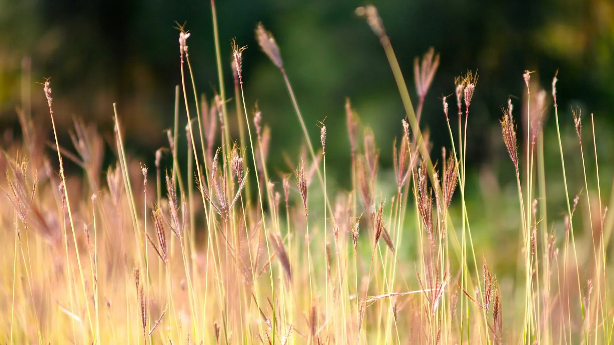

The Complete Method

Vellum Preparation
Raw skin arrives from the tannery scraped to a preliminary thickness. We continue this work ourselves: stretching the skin on a frame, scraping further with the lunellum until the surface is smooth and consistent, and pumicing with fine-grit stone to open the surface for ink absorption. The process takes two to three days per skin, and multiple skins are prepared simultaneously.
Quill Cutting & Ruling
Flight feathers — turkey for general work, swan for the finest formal hands — are first cured in hot sand to harden the barrel. A quill knife then cuts the point: an oblique nib for the Roman and italic traditions, a straight cut for Insular scripts. Nib width is calibrated precisely to the script and the body height of the text. The ruled lines — established with lead point or dry-point on a template — are transferred to each folio before writing begins.

Calligraphic Transcription
The text is written with iron-gall ink at a pace dictated by the script: Gothic Textura demands a slow, measured stroke; Italic moves more quickly. No corrections are possible on vellum — blotted or misdirected strokes cannot be erased without damage visible under ultraviolet light. Sheets with errors are set aside for practice; the commission receives only flawless work. Spaces for illuminated initials and miniatures are left blank.
Gilding & Gold Sizing
Raised gilding begins with a gesso ground: a compound of white lead, chalk, sugar, glue, and Armenian bole, built up in five to eight coats over each area to be gilded. When dry, the surface is polished smooth with a dog's tooth burnisher. On the day of gilding, the gesso is breathed upon to activate its moisture — gold leaf, held on a gilder's tip, is laid, pressed gently through a piece of glassine, and then burnished with an agate stone until it mirrors the studio.

Illumination & Painting
Pigments ground on glass are bound in gum arabic at a consistency that allows thin, translucent washes. Painting begins with broad underpaint — earth tones, lead white — then builds layer by layer through weeks or months: shadows deepened with transparent glazes, highlights raised with lead white or shell gold, final details added with a brush reduced to two or three hairs. The process cannot be hurried: each layer must be dry before the next is laid.

Binding & Delivery
Completed folios are collated, folded into quires, and pressed for several days to flatten them before sewing. The sewing structure — Coptic, Byzantine, or medieval chain-stitch — is chosen for its historical appropriateness to the commission. Oak boards, prepared in the studio, are covered in alum-tawed pig leather or dyed calf. Metal clasps are fitted. The finished work is wrapped in archival tissue and placed in a bespoke oak presentation casket lined with silk.